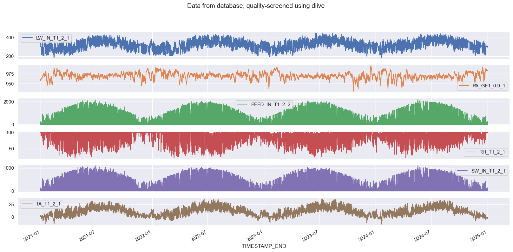
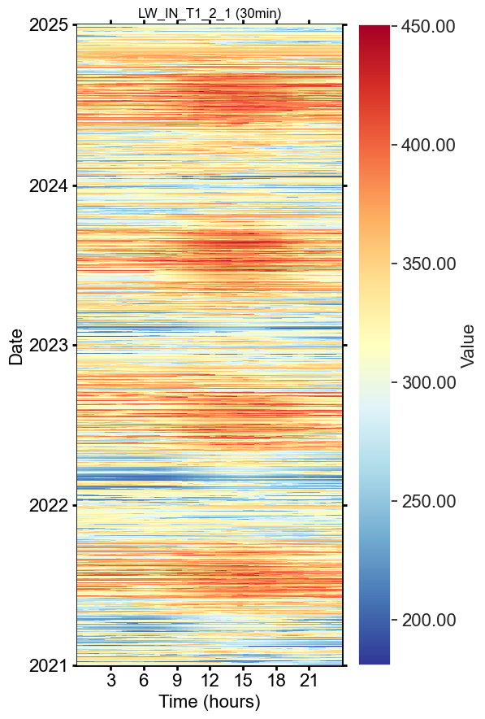
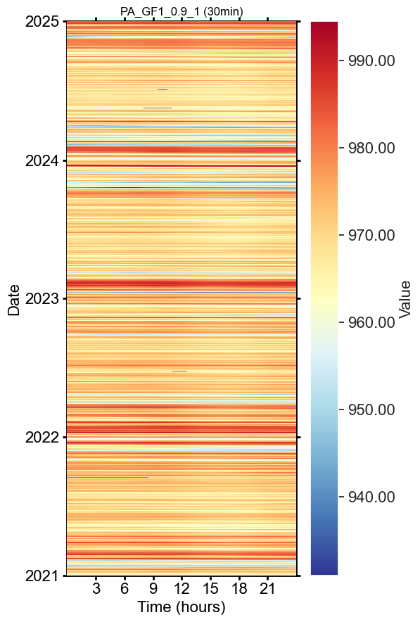
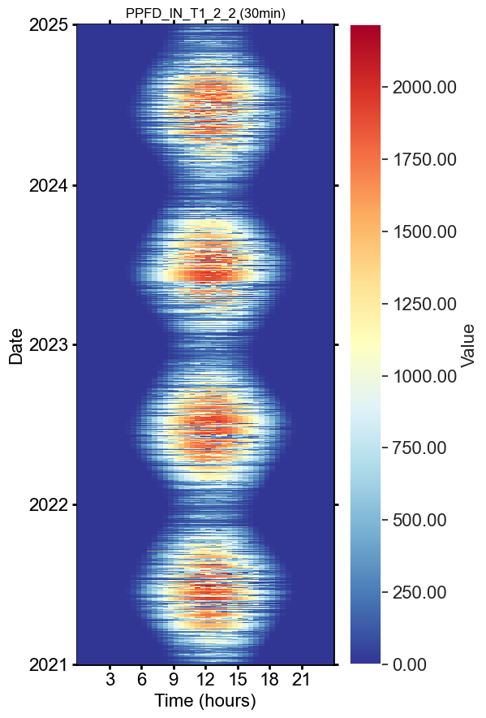
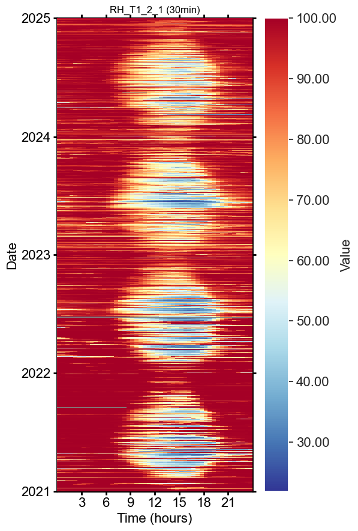
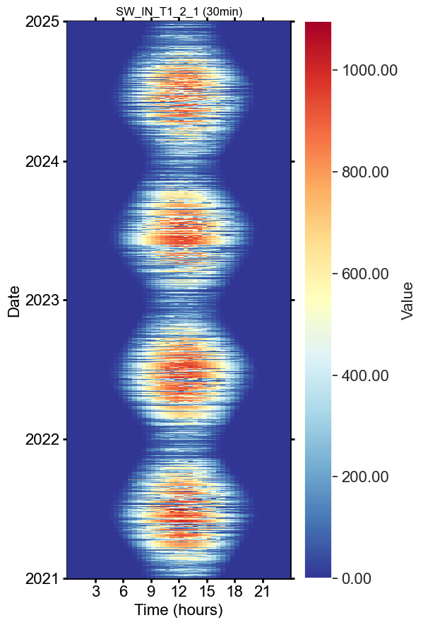
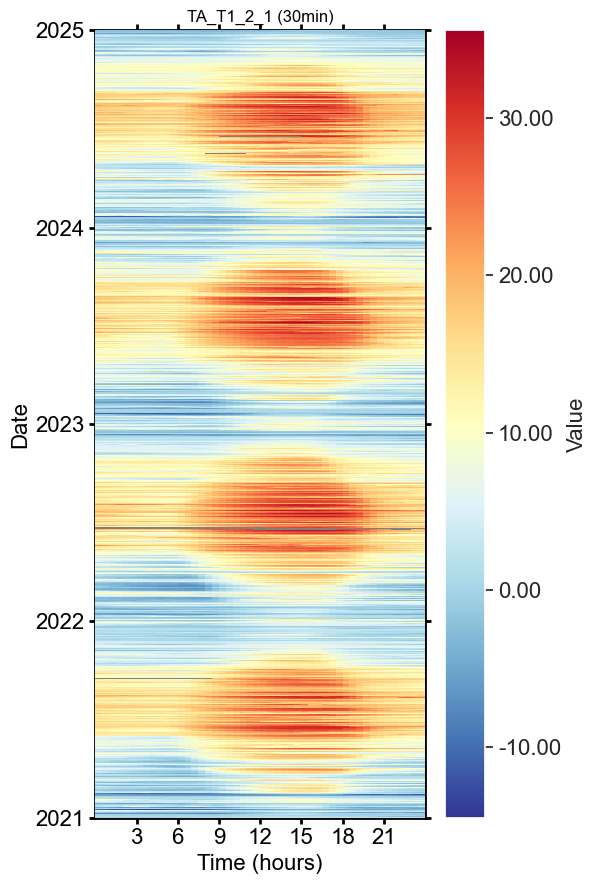

notebook version: 3 (4 Jul 2024)
new in this version: added check if downloaded data is indeed in 30MIN time resolution
This notebook can be used to download data from the database
InfluxDBData are stored to a
.csvfile in this folder
Data from the datbase, but from the old bucket CH-CHA_processing.
Auto-settings#
Data settings#
DIRCONF = r'L:\Sync\luhk_work\20 - CODING\22 - POET\configs'
# DIRCONF = r'P:\Flux\RDS_calculations\_scripts\_configs\configs' # Folder with configuration files: needed e.g. for connection to database
TIMEZONE_OFFSET_TO_UTC_HOURS = 1 # Timezone, e.g. "1" is translated to timezone "UTC+01:00" (CET, winter time)
REQUIRED_TIME_RESOLUTION = '30min' # 30MIN time resolution
Imports#
import importlib.metadata
from datetime import datetime
%matplotlib inline
import seaborn as sns
from pathlib import Path
from diive.core.io.files import save_parquet
sns.set_theme('notebook')
from dbc_influxdb import dbcInflux
from diive.core.plotting.heatmap_datetime import HeatmapDateTime
import warnings
warnings.filterwarnings(action='ignore', category=FutureWarning)
warnings.filterwarnings(action='ignore', category=UserWarning)
dt_string = datetime.now().strftime("%Y-%m-%d %H:%M:%S")
version_diive = importlib.metadata.version("diive")
print(f"diive version: v{version_diive}")
version_dbc = importlib.metadata.version("dbc_influxdb")
print(f"dbc-influxdb version: v{version_dbc}")
dbc = dbcInflux(dirconf=DIRCONF) # Connect to database
diive version: v0.85.0
dbc-influxdb version: v0.12.0
Reading configuration files was successful.
Connection to database works.
DOWNLOAD screened data from the database#
%%time
data_simple, data_detailed, assigned_measurements = dbc.download(
bucket=f'ch-cha_processed',
measurements=['TA', 'SW', 'PPFD', 'LW', 'RH', 'PA'],
fields=[
'TA_T1_2_1',
'SW_IN_T1_2_1',
'PPFD_IN_T1_2_2',
'LW_IN_T1_2_1',
'RH_T1_2_1',
'PA_GF1_0.9_1'
],
start='2021-01-01 00:00:01', # Download data starting with this date (the start date itself IS included),
stop='2025-01-01 00:00:01', # Download data before this date (the stop date itself IS NOT included),
timezone_offset_to_utc_hours=TIMEZONE_OFFSET_TO_UTC_HOURS,
data_version='meteoscreening_diive'
)
DOWNLOADING
from bucket ch-cha_processed
variables ['TA_T1_2_1', 'SW_IN_T1_2_1', 'PPFD_IN_T1_2_2', 'LW_IN_T1_2_1', 'RH_T1_2_1', 'PA_GF1_0.9_1']
from measurements ['TA', 'SW', 'PPFD', 'LW', 'RH', 'PA']
from data version meteoscreening_diive
between 2021-01-01 00:00:01 and 2025-01-01 00:00:01
with timezone offset to UTC of 1
Used querystring: from(bucket: "ch-cha_processed") |> range(start: 2021-01-01T00:00:01+01:00, stop: 2025-01-01T00:00:01+01:00) |> filter(fn: (r) => r["_measurement"] == "TA" or r["_measurement"] == "SW" or r["_measurement"] == "PPFD" or r["_measurement"] == "LW" or r["_measurement"] == "RH" or r["_measurement"] == "PA") |> filter(fn: (r) => r["data_version"] == "meteoscreening_diive") |> filter(fn: (r) => r["_field"] == "TA_T1_2_1" or r["_field"] == "SW_IN_T1_2_1" or r["_field"] == "PPFD_IN_T1_2_2" or r["_field"] == "LW_IN_T1_2_1" or r["_field"] == "RH_T1_2_1" or r["_field"] == "PA_GF1_0.9_1") |> pivot(rowKey:["_time"], columnKey: ["_field"], valueColumn: "_value")
querystring was constructed from:
bucketstring: from(bucket: "ch-cha_processed")
rangestring: |> range(start: 2021-01-01T00:00:01+01:00, stop: 2025-01-01T00:00:01+01:00)
measurementstring: |> filter(fn: (r) => r["_measurement"] == "TA" or r["_measurement"] == "SW" or r["_measurement"] == "PPFD" or r["_measurement"] == "LW" or r["_measurement"] == "RH" or r["_measurement"] == "PA")
dataversionstring: |> filter(fn: (r) => r["data_version"] == "meteoscreening_diive")
fieldstring: |> filter(fn: (r) => r["_field"] == "TA_T1_2_1" or r["_field"] == "SW_IN_T1_2_1" or r["_field"] == "PPFD_IN_T1_2_2" or r["_field"] == "LW_IN_T1_2_1" or r["_field"] == "RH_T1_2_1" or r["_field"] == "PA_GF1_0.9_1")
pivotstring: |> pivot(rowKey:["_time"], columnKey: ["_field"], valueColumn: "_value")
Download finished.
Downloaded data for 6 variables:
<-- LW_IN_T1_2_1 (70077 records) first date: 2021-01-01 00:30:00 last date: 2025-01-01 00:00:00
<-- PA_GF1_0.9_1 (70078 records) first date: 2021-01-01 00:30:00 last date: 2025-01-01 00:00:00
<-- PPFD_IN_T1_2_2 (70096 records) first date: 2021-01-01 00:30:00 last date: 2025-01-01 00:00:00
<-- RH_T1_2_1 (69934 records) first date: 2021-01-01 00:30:00 last date: 2025-01-01 00:00:00
<-- SW_IN_T1_2_1 (70103 records) first date: 2021-01-01 00:30:00 last date: 2025-01-01 00:00:00
<-- TA_T1_2_1 (69935 records) first date: 2021-01-01 00:30:00 last date: 2025-01-01 00:00:00
========================================
Fields in measurement TA of bucket ch-cha_processed:
#1 ch-cha_processed TA TA
#2 ch-cha_processed TA TA_1_1_1
#3 ch-cha_processed TA TA_EP
#4 ch-cha_processed TA TA_ERA
#5 ch-cha_processed TA TA_F
#6 ch-cha_processed TA TA_F_MDS
#7 ch-cha_processed TA TA_F_MDS_QC
#8 ch-cha_processed TA TA_F_QC
#9 ch-cha_processed TA TA_SOURCE
#10 ch-cha_processed TA TA_T1_2_1
#11 ch-cha_processed TA T_SONIC
Found 11 fields in measurement TA of bucket ch-cha_processed.
========================================
========================================
Fields in measurement SW of bucket ch-cha_processed:
#1 ch-cha_processed SW NIGHT
#2 ch-cha_processed SW SW_IN
#3 ch-cha_processed SW SW_IN_1_1_1
#4 ch-cha_processed SW SW_IN_AZI_4
#5 ch-cha_processed SW SW_IN_CORRECTED_SETTO_0_T1_2_1
#6 ch-cha_processed SW SW_IN_CORRECTED_T1_2_1
#7 ch-cha_processed SW SW_IN_ELE_4
#8 ch-cha_processed SW SW_IN_ERA
#9 ch-cha_processed SW SW_IN_F
#10 ch-cha_processed SW SW_IN_F_MDS
#11 ch-cha_processed SW SW_IN_F_MDS_QC
#12 ch-cha_processed SW SW_IN_F_QC
#13 ch-cha_processed SW SW_IN_POT
#14 ch-cha_processed SW SW_IN_SOURCE
#15 ch-cha_processed SW SW_IN_T1_2_1
#16 ch-cha_processed SW SW_OUT
#17 ch-cha_processed SW SW_OUT_CORRECTED_SETTO_0_T1_2_1
#18 ch-cha_processed SW SW_OUT_CORRECTED_T1_2_1
#19 ch-cha_processed SW SW_OUT_T1_2_1
Found 19 fields in measurement SW of bucket ch-cha_processed.
========================================
========================================
Fields in measurement PPFD of bucket ch-cha_processed:
#1 ch-cha_processed PPFD PPFD_IN
#2 ch-cha_processed PPFD PPFD_IN_1_1_1
#3 ch-cha_processed PPFD PPFD_IN_CORRECTED_SETTO_0_T1_2_1
#4 ch-cha_processed PPFD PPFD_IN_CORRECTED_SETTO_0_T1_2_2
#5 ch-cha_processed PPFD PPFD_IN_CORRECTED_T1_2_1
#6 ch-cha_processed PPFD PPFD_IN_CORRECTED_T1_2_2
#7 ch-cha_processed PPFD PPFD_IN_T1_2_1
#8 ch-cha_processed PPFD PPFD_IN_T1_2_2
#9 ch-cha_processed PPFD PPFD_OUT_CORRECTED_SETTO_0_T1_2_2
#10 ch-cha_processed PPFD PPFD_OUT_CORRECTED_T1_2_2
#11 ch-cha_processed PPFD PPFD_OUT_T1_2_2
Found 11 fields in measurement PPFD of bucket ch-cha_processed.
========================================
========================================
Fields in measurement LW of bucket ch-cha_processed:
#1 ch-cha_processed LW LW_IN
#2 ch-cha_processed LW LW_IN_1_1_1
#3 ch-cha_processed LW LW_IN_ERA
#4 ch-cha_processed LW LW_IN_F
#5 ch-cha_processed LW LW_IN_F_MDS
#6 ch-cha_processed LW LW_IN_F_MDS_QC
#7 ch-cha_processed LW LW_IN_F_QC
#8 ch-cha_processed LW LW_IN_JSB
#9 ch-cha_processed LW LW_IN_JSB_ERA
#10 ch-cha_processed LW LW_IN_JSB_F
#11 ch-cha_processed LW LW_IN_JSB_F_QC
#12 ch-cha_processed LW LW_IN_JSB_QC
#13 ch-cha_processed LW LW_IN_T1_2_1
#14 ch-cha_processed LW LW_OUT
#15 ch-cha_processed LW LW_OUT_T1_2_1
Found 15 fields in measurement LW of bucket ch-cha_processed.
========================================
========================================
Fields in measurement RH of bucket ch-cha_processed:
#1 ch-cha_processed RH RH
#2 ch-cha_processed RH RH_1_1_1
#3 ch-cha_processed RH RH_EP
#4 ch-cha_processed RH RH_SCALED_T1_2_1
#5 ch-cha_processed RH RH_SOURCE
#6 ch-cha_processed RH RH_T1_2_1
Found 6 fields in measurement RH of bucket ch-cha_processed.
========================================
========================================
Fields in measurement PA of bucket ch-cha_processed:
#1 ch-cha_processed PA CUSTOM_AIR_P_MEAN
#2 ch-cha_processed PA PA
#3 ch-cha_processed PA PA_1_1_1
#4 ch-cha_processed PA PA_EP
#5 ch-cha_processed PA PA_ERA
#6 ch-cha_processed PA PA_F
#7 ch-cha_processed PA PA_F_QC
#8 ch-cha_processed PA PA_GF1_0.9_1
#9 ch-cha_processed PA PA_SOURCE
Found 9 fields in measurement PA of bucket ch-cha_processed.
========================================
CPU times: total: 7.91 s
Wall time: 10.8 s
data_simple
| LW_IN_T1_2_1 | PA_GF1_0.9_1 | PPFD_IN_T1_2_2 | RH_T1_2_1 | SW_IN_T1_2_1 | TA_T1_2_1 | |
|---|---|---|---|---|---|---|
| TIMESTAMP_END | ||||||
| 2021-01-01 00:30:00 | 332.179450 | 958.107523 | 0.0 | 100.000000 | 0.0 | 0.156080 |
| 2021-01-01 01:00:00 | 329.543557 | 958.088840 | 0.0 | 100.000000 | 0.0 | 0.102816 |
| 2021-01-01 01:30:00 | 328.928400 | 958.323920 | 0.0 | 100.000000 | 0.0 | 0.105138 |
| 2021-01-01 02:00:00 | 331.492063 | 958.425240 | 0.0 | 99.998978 | 0.0 | 0.168548 |
| 2021-01-01 02:30:00 | 332.917923 | 958.625800 | 0.0 | 99.999973 | 0.0 | 0.214706 |
| ... | ... | ... | ... | ... | ... | ... |
| 2024-12-31 22:00:00 | 304.613900 | 983.370890 | 0.0 | 99.997990 | 0.0 | -1.919472 |
| 2024-12-31 22:30:00 | 303.039890 | 983.052160 | 0.0 | 99.997990 | 0.0 | -2.104678 |
| 2024-12-31 23:00:00 | 302.093633 | 982.851140 | 0.0 | 99.997990 | 0.0 | -2.089444 |
| 2024-12-31 23:30:00 | 302.217307 | 982.896827 | 0.0 | 99.997990 | 0.0 | -2.355761 |
| 2025-01-01 00:00:00 | 298.392973 | 982.856613 | 0.0 | 99.997990 | 0.0 | -2.578839 |
70104 rows × 6 columns
Plot downloaded data#
data_simple.plot(subplots=True, x_compat=True, title="Data from database, quality-screened using diive", figsize=(20, 9));

SAVE TO FILE#
OUTNAME = "14.1_CH-CHA_DATABASE_meteo6_2021-2024"
OUTPATH = r""
filepath = save_parquet(filename=OUTNAME, data=data_simple, outpath=OUTPATH)
# data_simple.to_csv(Path(OUTPATH) / f"{OUTNAME}.csv")
Saved file 14.1_CH-CHA_DATABASE_meteo6_2021-2024.parquet (0.063 seconds).
Heatmaps#
for col in data_simple.columns:
series = data_simple[col]
series.name = col
HeatmapDateTime(series, figsize=(6, 9)).show()






Stats#
data_simple.describe()
| LW_IN_T1_2_1 | PA_GF1_0.9_1 | PPFD_IN_T1_2_2 | RH_T1_2_1 | SW_IN_T1_2_1 | TA_T1_2_1 | |
|---|---|---|---|---|---|---|
| count | 70077.000000 | 70078.000000 | 70096.000000 | 69934.000000 | 70103.000000 | 69935.000000 |
| mean | 326.857186 | 970.345156 | 280.058510 | 86.781656 | 146.134851 | 10.449837 |
| std | 45.484251 | 7.854562 | 461.235197 | 17.690621 | 237.047488 | 8.293507 |
| min | 180.719637 | 930.964657 | 0.000000 | 21.875584 | 0.000000 | -14.506039 |
| 25% | 299.093603 | 966.195875 | 0.000000 | 78.047070 | 0.000000 | 3.882594 |
| 50% | 329.787710 | 970.582070 | 6.068913 | 96.295247 | 4.341663 | 9.995479 |
| 75% | 359.229473 | 974.869875 | 377.838333 | 99.857926 | 200.403947 | 16.261433 |
| max | 450.673410 | 994.529460 | 2215.730247 | 100.000000 | 1095.938702 | 35.581697 |
End of notebook.#
dt_string = datetime.now().strftime("%Y-%m-%d %H:%M:%S")
print(f"Finished. {dt_string}")
Finished. 2025-01-20 16:18:43